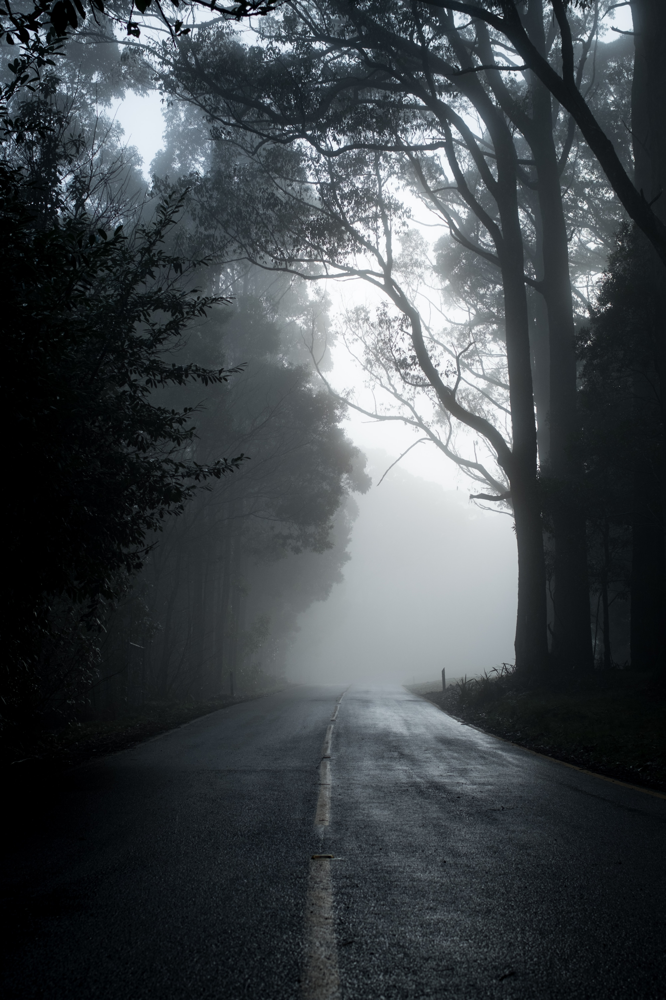
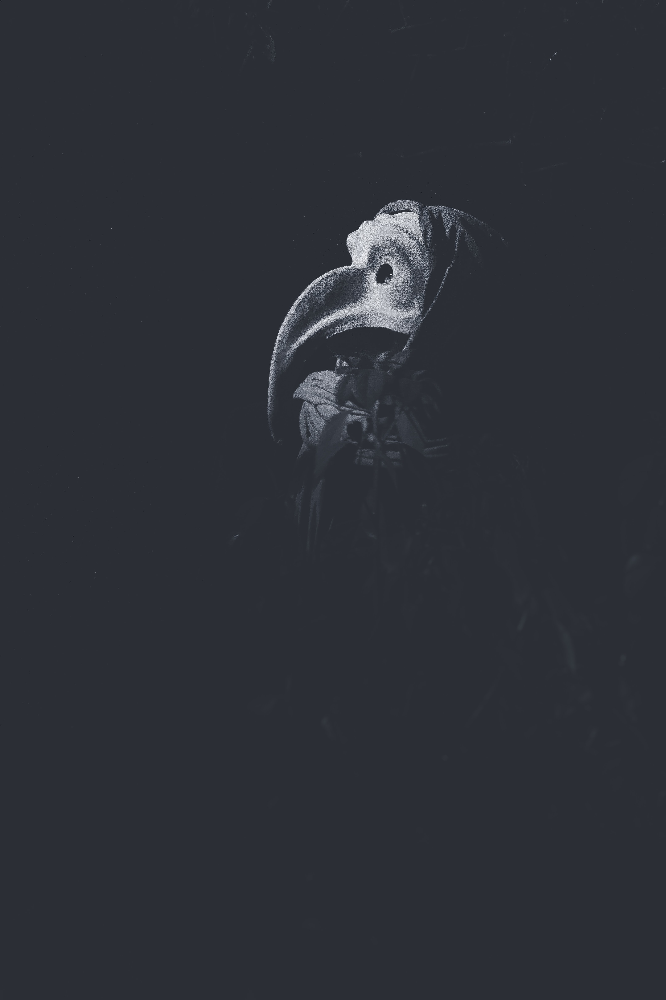

SunsetH.P. LovecraftThe cloudless day is richer at its close; A golden glory settles on the lea; Soft, stealing shadows hint of cool repose To mellowing landscape, and to calming sea. And in that nobler, gentler, lovelier light, The soul to sweeter, loftier bliss inclines; Freed form the noonday glare, the favour'd sight Increasing grace in earth and sky divines. But ere the purest radiance crowns the green, Or fairest lustre fills th' expectant grove, The twilight thickens, and the fleeting scene Leaves but a hallow'd memory of love! |
|
|  |
A dream within a dreamEdgar Allan PoeTake this kiss upon the brow! And, in parting from you now, Thus much let me avow -- You are not wrong, who deem That my days have been a dream; Yet if hope has flown away In a night, or in a day, In a vision, or in none, Is it therefore the less gone? All that we see or seem Is but a dream within a dream. I stand amid the roar Of a surf-tormented shore, And I hold within my hand Grains of the golden sand -- How few! yet how they creep Through my fingers to the deep, While I weep -- while I weep! O God! can I not grasp Them with a tighter clasp? O God! can I not save One from the pitiless wave? Is all that we see or seem But a dream within a dream? |
|  |
The Graden of ErosOscar WildeIt is full summer now, the heart of June; Not yet the sunburnt reapers are astir Upon the upland meadow where too soon Rich autumn time, the season’s usurer, Will lend his hoarded gold to all the trees, And see his treasure scattered by the wild and spendthrift breeze. Too soon indeed! yet here the daffodil, That love-child of the Spring, has lingered on To vex the rose with jealousy, and still The harebell spreads her azure pavilion… |